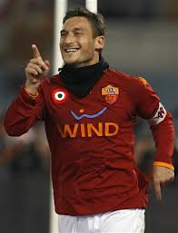

Introduction
The history of Associazione Sportiva Roma begins with its founding in the summer of 1927 by Italo Foshi, who initiated the merger of three older Italian Football Championship clubs from the city of Rome; Roman, Alba-Audace and Fortitudo.The purpose of the merger was to give the Eternal City a strong club to rival that of the more dominant Northern Italian clubs of the time.The only major Roman club to resist the merger was Lazio who were already a well established sporting society.
The club played its earliest seasons at the Motovelodromo Appio stadium, before settling in the working-class streets of Testaccio, where it built an all-wooden ground Campo Testaccio; this was opened in November 1929.An early season in which Roma made a large mark was the 1930–31 championship, the club finished as runners-up behind Juventus.Captain Attilio Ferraris along with Guido Masetti, Fulvio Bernardini and Rodolfo Volk were highly important players during this period.
Historical players
- Cesare Augusto Fasanelli,,,,,, Italy MF 1927–1933 167 56
- Arturo Chini Ludueña,,,,,, Argentina FW 1927–1934 160 42
- Attilio Ferraris IV ,,,,,, Italy MF 1927–1934 / 1938-1939 217 2
- Rodolfo Volk,,,,,, Italy FW 1928–1933 157 103
- Fulvio Bernardini,,,,,, Italy MF 1928–1939 286 45
- Raffaele Costantino ,,,,,, Italy FW 1930–1935 157 42
- Guido Masetti,,,,,, Italy GK 1930–1943 339 0
- Enrique Guaita,,,,,, Argentina
Italy FW 1933–1935 61 43
- Andrea Gadaldi,,,,,, Italy MF 1933–1941 179 3
- Eraldo Monzeglio,,,,,, Italy DF 1935–1939 ? ?
- Amedeo Amadei,,,,,, Italy FW 1936-1938 / 1939-1948 216 101
- Miguel Angel Pantò,,,,,, Argentina FW 1939–1947 ? 42
- Luigi Brunella,,,,,, Italy DF 1939–1948 158 2
- Naim Krieziu,,,,,, Albania LW 1939–1948 ? 41
- Fosco Risorti,,,,,, Italy GK 1941–1952 205 0
- Sergio Andreoli,,,,,, Italy DF 1941–1950 205 13
- Bruno Pesaola,,,,,, Argentina
Italy FW 1947–1950 90 20
- Arcadio Venturi,,,,,, Italy MF 1948–1957 288 17
- Armando Tre Re,,,,,, Italy DF 1949–1954 169 6
- Alcides Ghiggia ,,,,,, Uruguay
Italy RW 1953–1961 201 19
- István Nyers,,,,,, Hungary FW 1954–1956 54 20
- Giosuè Stucchi,,,,,, Italy DF 1954–1961 159 2
- Luigi Giuliano,,,,,, Italy MF 1954–1962 140 9
- Giacomo Losi,,,,,, Italy DF 1954–1969 450 2
- Dino da Costa,,,,,, Brazil FW 1955-1960 / 1961-1962 149 71
- Luciano Panetti,,,,,, Italy GK 1955–1961 146 0
- Gunnar Nordahl,,,,,, Sweden FW 1956–1958 34 15
- Paolo Pestrin,,,,,, Italy MF 1956–1963 195 17
- Alberto Orlando,,,,,, Italy MF 1957-1958 / 1959-1964 140 17
- arlo Mazzone,,,,,, Italy DF 1958–1959 ? ?
- Arne Selmosson,,,,,, Sweden FW 1958–1961 87 30
- Fabio Cudicini,,,,,, Italy GK 1958–1963 165 0
- Pedro Waldemar Manfredini,,,,,, Argentina FW 1959–1965 130 76
- Juan Alberto Schiaffino,,,,,, Uruguay
- Italy MF 1960–1962 ? 3
- Francisco Lojacono,,,,,, Argentina FW 1960–1963 56 22
- Giulio Corsini,,,,,, Italy DF 1960–1964 145 1
- Giancarlo De Sisti,,,,,, Italy MF 1960–1964 / 1974-1979 222 22
- Antonio Valentín Angelillo,,,,,, Argentina
Italy FW 1961–1965 106 27
- Sergio Carpanesi,,,,,, Italy GK 1961–1967 158 0
- John Charles,,,,,, Wales FW 1962–1963 10 4
- Alberto Ginulfi,,,,,, Italy GK 1962–1975 160 0
- Angelo Sormani,,,,,, Italy FW 1963–1964 ? 6
- Karl-Heinz Schnellinger,,,,,, Germany MF 1964–1965 ? 1
- Elvio Salvori,,,,,, Italy ,,SW - MF 1964-1966 / 1968-1973 170 11
- Francesco Cappelli,,,,,, Italy RB 1965-1966 / 1967-1972 115 2
- Pier Luigi Pizzaballa,,,,,, Italy GK 1966–1969 ? 0
- joaquín Peiró,,,,,, Spain MF 1966–1970 128 28
- Fabio Capello,,,,,, Italy MF 1967–1970 89 18
- Francesco Scaratti,,,,,, Italy MF 1967–1973 161 12
- Franco Cordova,,,,,, Italy MF 1967–1976 212 9
- Giuliano Taccola,,,,,,, Italy FW 1967–1969 41 17
- Luciano Spinosi,,,,,, Italy RB 1967–1970 / 1978-1982 150 6
- Aldo Bet,,,,,, Italy DF 1968–1973 184 1
- Sergio Santarini,,,,,, Italy DF 1968–1981 344 7
- Walter Franzot,,,,,, Italy MF 1969–1973 106 7
- Renato Cappellini,,,,,,, Italy FW 1969–1974 136 33
- Amarildo,,,,,, Brazil LW 1970–1972 40 11
- Luis del Sol,,,,,, Spain MF 1970–1972 59 4
- Valerio Spadoni,,,,,, Italy MF 1971–1976 108 18
- Giorgio Morini,,,,,,, Italy LB - MF 1971–1976 133 8
- Franco Peccenini,,,,,, Italy DF 1971–1980 183 1
- Francesco Rocca,,,,,, Italy LB 1972–1981 172 2
- Agostino Di Bartolomei,,,,,, Italy MF 1972–1984 293 64
- Piergiorgio Negrisolo,,,,,, Italy MF 1973–1976 93 8
- Pierino Prati,,,,,, Italy FW 1973–1978 82 27
- Paolo Conti,,,,,, Italy GK 1973–1980 205 0
- Bruno Conti,,,,,, Italy LW 1973-1975 / 1976-1991 304 38
- Loris Boni,,,,,, Italy MF 1975–1979 99 1
- Domenico Maggiora,,,,,, Italy DF 1976–1982 155 2
- Michele De Nadai,,,,,, Italy DF - MF 1977–1981 99 3
- Roberto Scarnecchia ,,,,,, Italy RW 1977–1983 94 3
- Roberto Pruzzo,,,,,, Italy FW 1978–1988 315 136
- Franco Tancredi,,,,,, Italy GK 1978–1990 382 0
- Maurizio Turone,,,,,, Italy DF 1979–1983 93 2
- Carlo Ancelotti,,,,,, Italy MF 1979–1987 227 18
- Dario Bonetti,,,,,, Italy DF 1980-1982 / 1983-1986 132 3
- Paulo Roberto Falcão,,,,,, Brazil MF 1980–1985 152 28
- Odoacre Chierico,,,,,, Italy RW 1981–1985 119 10
- Ubaldo Righetti,,,,,, Italy RB 1981–1988 171 2
- Sebastiano Nela,,,,,, Italy RB 1981–1993 395 20
- Giuseppe Giannini,,,,,, Italy MF 1981–1996 437 75
- Herbert Prohaska,,,,,, Austria MF 1982–1983 43 5
- Pietro Vierchowod,,,,,, Italy DF 1982–1983 43 0
- Michele Nappi,,,,,, Italy DF 1982–1984 46 0
- Maurizio Iorio,,,,,, Italy FW 1982–1983 / 1984-1985 63 12
- Aldo Maldera,,,,,, Italy DF 1982–1985 117 8
- Toninho Cerezo,,,,,, Brazil MF 1983–1986 104 25
- Ciccio Graziani,,,,,, Italy RW - FW 1983–1986 95 21
- Emidio Oddi Italy,,,,,, LB 1983–1989 207 4
- Zbigniew Boniek,,,,,, Poland MF 1985–1988 92 23
- Stefano Desideri,,,,,, Italy MF 1985–1991 190 32
- Manuel Gerolin,,,,,, Italy DF 1985–1991 192 9
- Klaus Berggreen,,,,,, Denmark FW 1986–1987 64 1
- Fulvio Collovati,,,,,, Italy DF 1987–1989 64 1
- Antonio Tempestilli,,,,,, Italy RB 1987–1989 67 2
- Lionello Manfredonia,,,,,, Italy DF 1987–1990 94 4
- Rudi Völler Germany,,,,,, FW 1987–1992 196 69
- Gianluca Signorini,,,,,, Italy DF 1987–1993 132 5
- Fabrizio Di Mauro,,,,,, Italy MF 1988–1992 130 9
- Ruggiero Rizzitelli,,,,,, Italy FW 1988–1994 209 54
- Thomas Berthold,,,,,, Germany DF 1989–1991 88 5
- Antonio Comi,,,,,, Italy DF 1989–1994 97 4
- Giovanni Piacentini,,,,,, Italy MF 1989–1995 187 2
- Giovanni Cervone,,,,,, Italy GK 1989–1997 198 0
- Fabio Petruzzi,,,,,, Italy DF 1989-1990 / 1991-1999 135 0
- Andrea Carnevale,,,,,, Italy FW 1990–1993 72 24
- Fausto Salsano,,,,,, Italy MF 1990–1993 108 8
- Amedeo Carboni,,,,,, Italy LB 1990–1997 229 5
- Aldair,,,,,, Brazil DF 1990–2004 415 20
- Walter Bonacina,,,,,, Italy MF 1991–1994 114 2
- Luigi Garzja,,,,,, Italy DF 1991–1994 102 0
- Thomas Häßler,,,,,, Germany RW 1991–1994 116 13
- Francesco Totti,,,,,, Italy FW 1992- 641 270
- Massimiliano Cappioli,,,,,, Italy MF 1993–1996 103 20
- Marco Lanna,,,,,, Italy DF 1993–1997 121 2
- Abel Balbo,,,,,, Argentina FW 1993-1998 / 2000-2002 175 78
- Francesco Moriero,,,,,, Italy MF 1994–1997 88 11
- Daniel Fonseca,,,,,, Uruguay FW 1994–1997 75 22
- Luigi Di Biagio,,,,,, Italy MF 1994–1997 122 18
- Marco Delvecchio,,,,,, Italy FW 1995–2005 269 77
- Damiano Tommasi,,,,,, Italy MF 1996–2006 314 19
- Michael Konsel,,,,,, Austria GK 1997–1999 40 0
- Eusebio Di Francesco,,,,,, Italy MF 1997–2001 102 14
- Antônio Carlos Zago,,,,,, Brazil DF 1997–2002 116 2
- Cafu,,,,,, Brazil RB - RW 1997–2003 193 8
- Vincent Candela,,,,,, France LB 1997–2005 253 14
- Marcos Assunção,,,,,, Brazil MF 1999–2002 71 9
- Francesco Antonioli,,,,,, Italy GK 1999–2003 130 0
- Vincenzo Montella,,,,,, Italy FW 1999-2006
2008-09 239 94
- Hidetoshi Nakata,,,,,, Japan MF 2000–2001 36 5
- Gabriel Batistuta,,,,,, Argentina FW 2000–2003 85 33
- Jonathan Zebina,,,,,, France DF 2000–2004 123 1
- Emerson,,,,,, Brazil MF 2000–2004 143 20
- Walter Samuel,,,,,, Argentina DF 2000–2004 168 11
- Francisco Lima,,,,,, Brazil MF 2001–2004 130 0
- Antonio Cassano,,,,,, Italy FW 2001–2005 161 52
- Leandro Cufré,,,,,, Argentina LB 2001-2003 / 2004-2006 107 2
- Daniele De Rossi,,,,,, Italy MF 2001- 389 45
- Traianos Dellas,,,,,, Greece DF 2002–2005 42 3
- Christian Panucci,,,,,, Italy DF 2002–2009 311 29
- Olivier Dacourt,,,,,, France MF 2003–2006 121 2
- Cristian Chivu,,,,,, Romania DF 2003–2007 122 6
- Mancini,,,,,, Brazil RW 2003–2008 213 55
- Alberto Aquilani,,,,,, Italy MF 2003–2009 140 14
- Simone Perrotta,,,,,, Italy MF 2004- 300 45
- Matteo Ferrari,,,,,, Italy DF 2004-05 / 2006-2008 104 1
- Philippe Mexès,,,,,, France DF 2004-2011 254 15
- Aleandro Rosi,,,,,, Italy RB 2004-2012 90 3
- Rodrigo Taddei,,,,,, Brazil MF 2005- 258 29
- Doni,,,,,, Brazil GK 2005-2011 193 0
- Max Tonetto,,,,,, Italy DF 2006–2010 121 1
- David Pizarro,,,,,, Chile MF 2006-2011 192 16
- Marco Cassetti,,,,,, Italy DF 2006-2012 189 5
- Mirko Vučinić,,,,,, Montenegro FW 2006-2011 196 63
- Júlio Sérgio,,,,,, Brazil GK 2006-2011 52 0
- Matteo Brighi,,,,,, Italy MF 2007-2011 135 13
- Cicinho,,,,,, Brazil RB 2007-2012 90 3
- Juan,,,,,, Brazil DF 2007-2012 139 10
- Júlio Baptista,,,,,, Brazil FW 2008-2010 73 15
- Jérémy Menez,,,,,, France FW 2008-2011 105 11
- John Arne Riise,,,,,, Norway LB 2008-2011 131 11
- Nicolás Burdisso,,,,,, Argentina DF 2009- 89 5
- Luca Toni,,,,,, Italy FW 2010 15 5
- Marco Borriello,,,,,, Italy FW 2010- 54 17
- Fábio Simplício,,,,,, Brazil MF 2010-2012 48 7
- Fabio Borini,,,,,, Italy FW 2011-2012 27 11
- Maarten Stekelenburg,,,,,, Netherlands GK 2011- 34 0
- Gabriel Heinze,,,,,, Argentina DF 2011-2012 32 0
- Miralem Pjanić,,,,,, Bosnia and Herzegovina MF 2011- 31 3
- Erik Lamela,,,,,, Argentina FW 2011- 32 8
- Pablo Daniel Osvaldo,,,,,, Italy FW 2011- 26 11
- Bojan Krkić,,,,,, Spain FW 2011- 38 7
Championships
League
3
Cup
9
Super Cup
2

AS Roma's Legend
Personal information
Full name : Francesco Totti,
Date of birth :
27 September 1976 (age 36)
Place of birth : Rome, Italy,
Height : 1.80 m (5 ft 11 in)
Playing position : Second Striker
Attacking Midfielder
Club information
Current club Roma
Number 10
Youth career
1984 Fortitudo
1984–1986 Smit Trastevere
1986–1989 Lodigiani
1989–1992 Roma
Senior career
Years Team Apps (Gls)
1993)– Roma 535 (227)
National team
1992 Italy U15 6 (3)
1991–1992 Italy U16 13 (2)
1993–1995 Italy U18 14 (7)
1995–1997 Italy U21 8 (4)
1998–2006 Italy 58 (9)